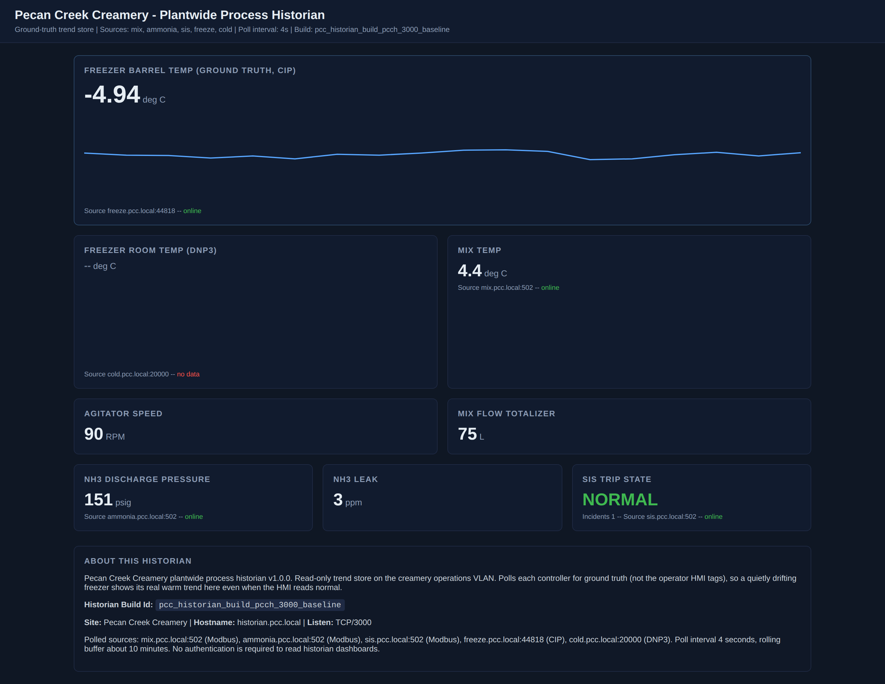
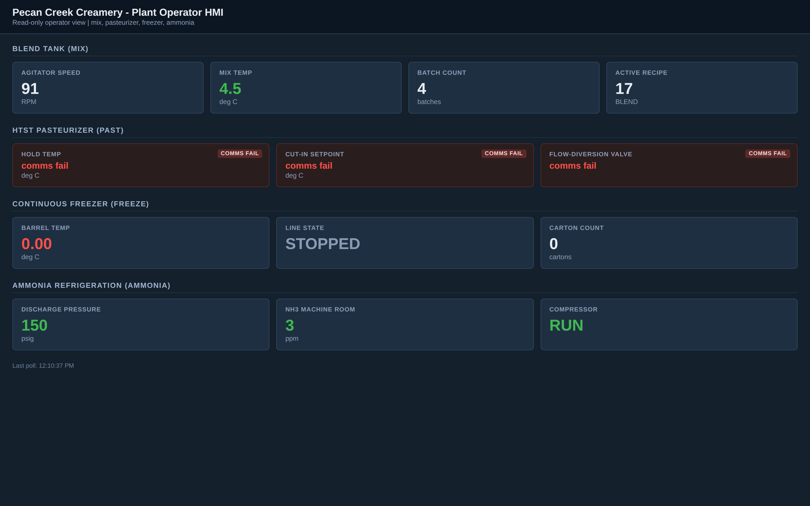

Exercise OTSOC-6.4: Capstone, The Insurer Report
Scenario
The insurer's OT security questionnaire is due. Pecan Creek Creamery cannot renew its cyber policy until the SOC delivers a full architecture and risk package, and you are the analyst who owns it. Everything you built across the track feeds this one deliverable: the zone-and-conduit diagram from Exercise 6.1, the SL-T vectors from Exercise 6.2, the iDMZ and boundary design from Exercise 6.3, and the consequence model you have carried since the first level. The capstone is the synthesis.
The full plant runs live for reference, including the operator HMI and the corporate portal, so you can confirm the asset inventory and ground every claim in a real device. You produce the integrated package: the partition with the ammonia SIS in its own safety zone, the per-FR security-level targets, the Level 3.5 DMZ with no direct IT-to-OT path, a remediation roadmap ordered by consequence, and a one-page executive summary for the insurer and the board. The package goes to the insurer rubric, which scores it against every required element and against the consequence model, and releases the flag once the deliverable is complete and the roadmap is ordered safety-first.
Why this matters
An insurer questionnaire is the moment an OT program is forced to prove it can describe and defend itself in one document. The underwriter is not a control engineer; the executive summary has to land in one page for a board, while the architecture, SL vectors, and rule set have to survive review by a technical assessor. Producing both registers in one package is the skill this capstone certifies.
The ordering of the remediation roadmap is the single most consequential editorial choice. OT inverts the IT CIA triad: safety and integrity come before confidentiality, because a defeated ammonia trip injures people and under-processed milk reaches the public, while a leaked portal file is a lower-consequence loss. A roadmap that fixes the corpweb LFI before it isolates the ammonia SIS, because the LFI is easier, is a roadmap that an OT assessor rejects. Ordering by consequence, safety first, then food safety, then availability, then confidentiality, is what tells the insurer the SOC understands what it is actually protecting.
| Credentials in scope | Username | Password | Where it is used |
|---|---|---|---|
| Operator HMI kiosk | operator |
PecanCreek#2026 |
Read-only confirmation of the asset inventory at the HMI |
Before You Begin
After the lab transitions to Running, the Exercise Network panel lists every plant device, the corporate portal, the HMI, and the insurer rubric grader with their IPs. Read the IPs off the panel into shell variables; every student gets a different subnet.
Kali - capture the key IPs from the panel
Confirm the grader knows the capstone deliverable before you assemble the package.
You should see a JSON list including capstone. An empty reply means the lab is not Running yet; wait for the panel to populate.
Learning Objectives
- Confirm the full asset inventory against the live plant
- Produce the zone-and-conduit diagram with the SIS in its own safety zone
- Assign per-FR SL-T vectors ordered by worst-case consequence
- Present the iDMZ and deny-by-default boundary design with no direct IT-to-OT path
- Order the remediation roadmap by consequence: safety, food safety, availability, confidentiality
- Write a one-page executive summary and submit the package to the insurer rubric
Walkthrough
Step 1: Confirm the asset inventory against the live plant
Ground the package in the real plant before you write a word. The historian polls every control device, so its plantwide trends dashboard is the fastest way to confirm the inventory you carry from the earlier levels is still accurate. Open the dashboard in your browser using the historian IP from the Exercise Network panel on port 3000.
Kali - open the historian dashboard in the browser
In your browser address bar, enter the historian IP from the panel on port 3000, for example http://HIST_IP:3000/.

The dashboard trends the whole plant, and its About panel enumerates every polled source and the protocol behind each one: the blend tank, pasteurizer, ammonia BPCS, freezer, and cold-storage RTU. That source inventory and its protocol list are exactly what the insurer report's asset and exposure picture is built from, because each polled endpoint is an asset to name and each protocol is an exposure to assess. If you want the same list programmatically to paste into the package, the historian exposes it as JSON as an optional cross-check.
Kali (optional) - cross-check the source inventory as JSON
Cross-check the operator HMI next to confirm the supervisory layer is live and the plant is at a normal state. Open the operator board in your browser using the HMI IP from the panel on port 80; the kiosk account is read-only.
Kali - open the operator HMI in the browser
In your browser address bar, enter the HMI IP from the panel on port 80, for example http://HMI_IP/, and sign in read-only as operator / PecanCreek#2026 if prompted.

The operator board shows the plant running as a whole: the blend tank online with its agitator turning and its recipe loaded, the ammonia refrigeration compressor running at pressure, and the freezer tile present. Reading the supervisory layer off the board confirms the control assets you name in the package are live and calm, which is what the insurer expects: claims tied to a real operator view, not to a stale spreadsheet. For analysts who want the same state as raw fields, the HMI exposes it as JSON as an optional programmatic cross-check.
Kali (optional) - cross-check the supervisory state as JSON
Step 2: Assemble the four technical sections
The capstone integrates the three earlier deliverables plus the consequence model. Lay the sections out before you write the prose so nothing is dropped.
| Section | Source | The one thing the grader checks |
|---|---|---|
| Zone-and-conduit diagram | Exercise 6.1 | Ammonia SIS isolated in its own safety zone |
| SL-T vectors | Exercise 6.2 | Per-FR vectors ordered by consequence, safety highest |
| iDMZ and boundary design | Exercise 6.3 | Deny-by-default, no direct IT-to-OT path |
| Remediation roadmap | This exercise | Ordered by consequence, safety first |
Step 3: Order the remediation roadmap by consequence
The roadmap is where the capstone is won or lost. Order the fixes by the harm they prevent, not by how easy they are. The inverted CIA triad puts safety and integrity ahead of confidentiality.
| Priority | Remediation | Consequence class |
|---|---|---|
| 1 | Isolate the ammonia SIS; restore tamper-evident trip setpoints; status-only conduit | Safety: a defeated trip is a toxic release |
| 2 | Protect the pasteurizer FDV and cut-in setpoints from unauthorized writes | Food safety: under-processed milk shipped |
| 3 | Harden the control zone; restrict writes on blend, freezer, ammonia BPCS | Process integrity: lost batch, refrigeration upset |
| 4 | Build the iDMZ; replicate the historian; segment the cold-chain telemetry | Availability: cold-chain spoilage, loss of view |
| 5 | Patch the corpweb LFI; rotate the leaked contractor credential | Confidentiality: leaked file and credential |
The corpweb LFI is the easiest fix and the lowest consequence, so it sits last. Sequencing it ahead of the ammonia SIS would invert the safety ordering and the grader penalizes that.
Step 4: Write the one-page executive summary
The summary speaks to the board and the underwriter, not the engineer. Keep it to one page: state the top risk in plain language (a flat network lets a web bug reach the ammonia safety controller), state the worst-case consequence (a worker-safety event), name the fix (zones and conduits, an SL-target program, and an industrial DMZ), and state the sequence (safety first). Avoid protocol jargon; the technical sections carry the detail.
Step 5: Compose and submit the package
Read the required elements first so your package names every keyword the insurer rubric checks: the zone-and-conduit diagram, the SL-T vectors, the iDMZ, the prioritized roadmap, the executive summary, and the consequence ordering.
Kali - read the required elements for the capstone deliverable
Compose the full package in a file so you can iterate. Pull every section together in one submission, ending with the consequence-ordered roadmap.
Kali - write the capstone package to a file
cat > /tmp/capstone.txt <<'EOF'
Pecan Creek Creamery insurer architecture and risk package per IEC 62443.
Asset inventory confirmed against the live plant.
Zone and conduit diagram: assets partitioned into zones with conduit rules
between them, the ammonia SIS safety instrumented system isolated in its own
safety zone separate from the BPCS, with the IT-to-OT boundary conduit named.
Security level target SL-T vectors assigned per FR ordered by consequence,
ammonia safety highest, with the SL-T versus SL-C boundary gap identified.
Industrial dmz (iDMZ) boundary design at Level 3.5 between IT and OT with a
brokered MFA jump host and a replicated historian, no direct IT-to-OT path.
Boundary firewall deny by default with conduit rules and ACL, every allow
justified.
Prioritized remediation roadmap ordered by consequence: ammonia safety trips and
the pasteurizer food safety FDV first, then cold-chain availability, then the
corpweb confidentiality LFI fix. Roadmap ordered by consequence, safety first.
One-page executive summary for the insurer and the board in plain language.
EOF
wc -l /tmp/capstone.txt
POST the file with deliverable set to capstone and read the flag field.
Kali - POST the package to the insurer rubric
Expected output (flag value masked)
A passed of true means every required element was present and the roadmap was consequence-ordered. The insurer rubric is the strictest grader on the track, so if passed is false, read the response carefully: it names the missing element or flags the roadmap order. Add or reorder, then POST again. Iterate until passed is true.
Output Interpretation
- The capstone grader checks for all four technical sections plus the executive summary; a package strong on architecture but missing the roadmap or the summary fails on completeness, not on quality
- Roadmap order is scored explicitly: the words safety first and the safety-before-confidentiality sequence are what the grader reads, so state the ordering in plain language, do not leave it implied
- The executive summary is the element most often written like a technical section; the grader and the board both want plain-language consequence, not protocol detail
- Because this deliverable integrates the three earlier ones, a missing element usually traces back to a section you can lift directly from your 6.1, 6.2, or 6.3 submission
Analysis Questions
1. Why does the remediation roadmap fix the ammonia SIS before the corpweb LFI, when the LFI is far easier to patch?
Reveal answer
OT inverts the CIA triad to safety and integrity first, confidentiality last. A defeated ammonia trip is a toxic release that injures people; the LFI leaks a file. Ordering by ease would put the low-consequence fix first and leave the worker-safety risk open longest, which an OT assessor rejects. The roadmap is ordered by the harm each fix prevents, so safety leads regardless of effort.
2. The executive summary and the technical sections target two different readers. How should that change how you write each?
Reveal answer
The technical sections target an assessor who needs the zones, the SL vectors, the rule set, and the FR mapping in full detail. The executive summary targets a board and an underwriter who need the top risk, its worst-case consequence, the fix, and the sequence in one page of plain language. Putting protocol detail in the summary loses the board; putting hand-waving in the technical sections loses the assessor. Write each to its reader.
3. The capstone integrates three earlier deliverables. Why does the insurer want them synthesized into one package rather than as three separate documents?
Reveal answer
The underwriter is pricing a single policy against a single plant, so they need one coherent picture: the partition, the targets it implies, the boundary that enforces them, and the sequence in which the gaps close. Three disconnected documents force the assessor to reconcile them and leave room for contradictions, such as a roadmap that does not match the SL gaps. A synthesized package proves the SOC reasons about the plant as one system, which is what the insurer is actually buying.
Capture the Flag
The insurer rubric grader releases the flag when your package carries every required element, the zone-and-conduit diagram with the isolated safety zone, the per-FR SL-T vectors, the iDMZ boundary with no direct IT-to-OT path, the one-page executive summary, and a remediation roadmap ordered by consequence with safety first. You earn it by submitting the complete, consequence-ordered package. The flag marks the capstone of the OT SOC track, complete.
Flag format:
OCR{pcc_otsoc_capstone_<masked>}
Submit the assembled flag in the OCR platform.